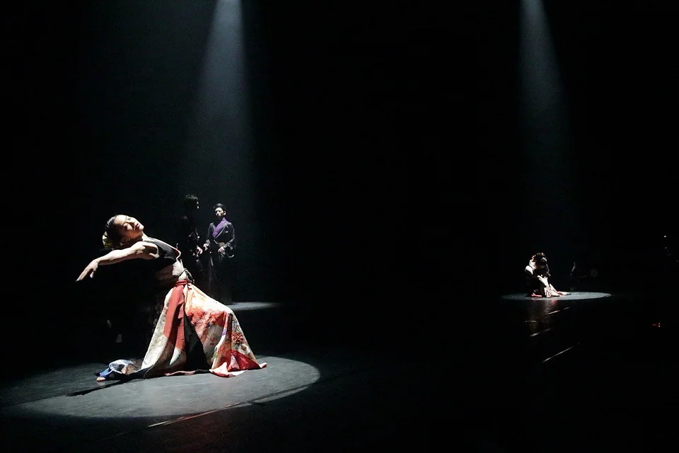
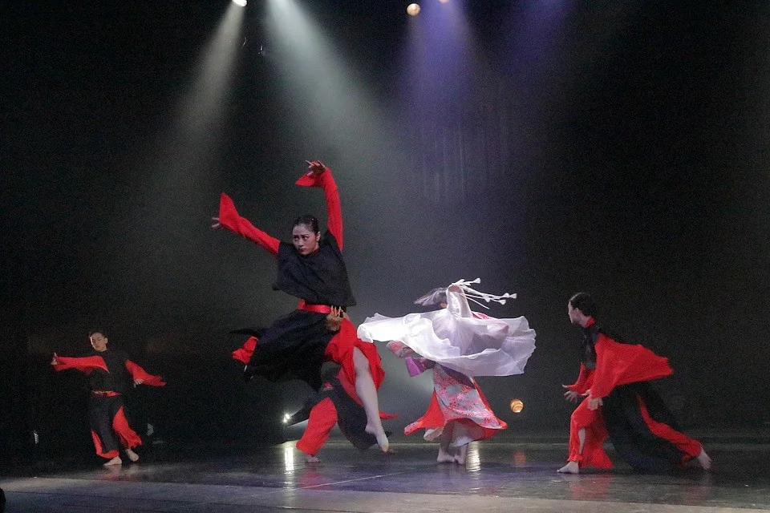
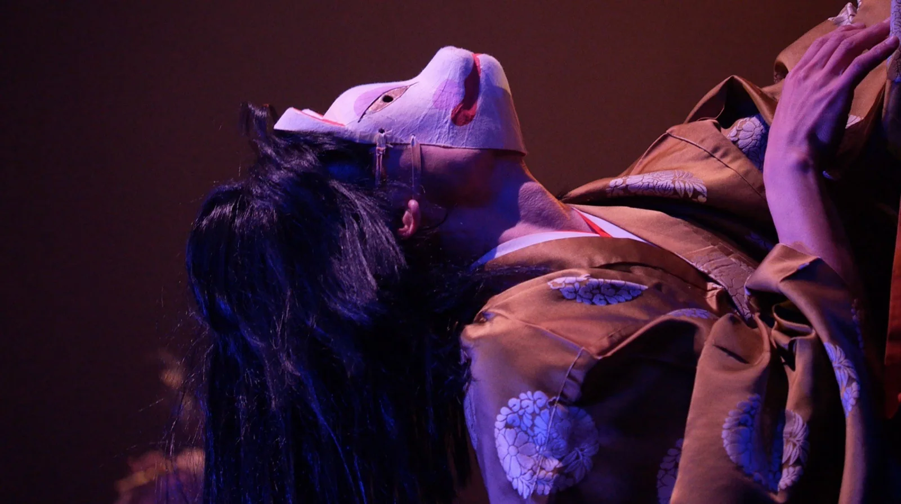
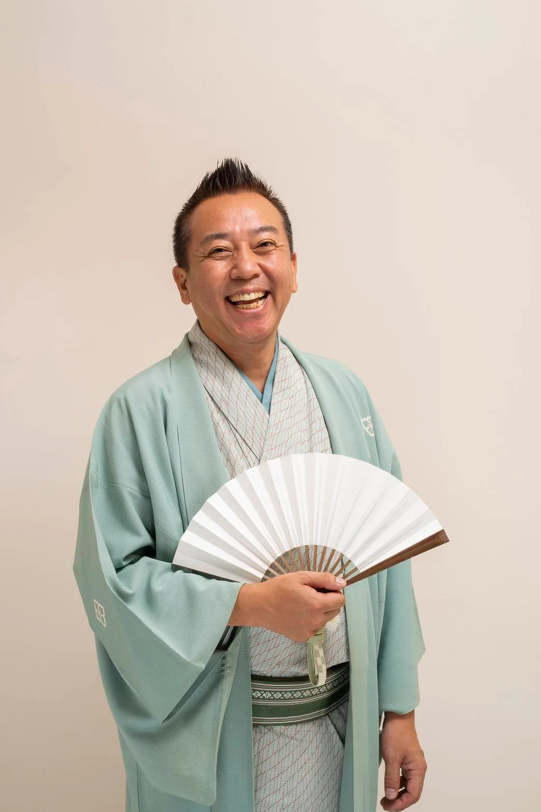
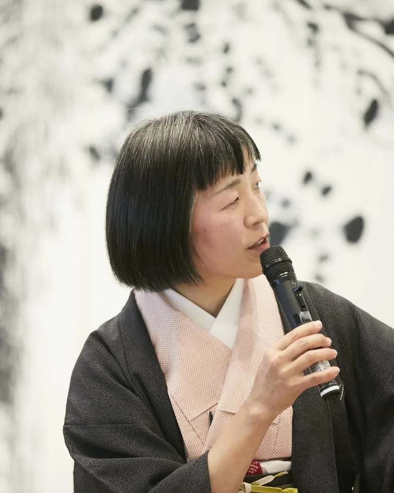

観る01
音楽、身体、アート。
秩父で、生きた表現に出会う。
- 11月6日（土）
- 音楽プログラム
- 11月7日（日）
- メイン公演
詳細・チケット情報は後日ご案内します。
開催のお知らせ →CHICHIBU ART CREATION 2027
ちちぶアートクリエーション 2027
秩父宮記念市民会館
秩父市歴史文化伝承館
CHICHIBU, SAITAMA
ART / SILK / PEOPLE
秩父銘仙 反物デザイン公募
秩父で育った繭から、絹糸へ。
あなたのデザインを、市内の織元が
一反の秩父銘仙に織り上げます。
作品は、型として残る。
この先も、織り継いでいける。
応募締切 2027年1月予定
公募について ↗ 制作の手引きを読む →FROM SILK TO TEXTILE
織りの表情に、色がひらく。


反物の写真は制作イメージです。今回の公募作品ではありません。
秩父は、かつて養蚕と織物のまちでした。
繭から糸を引き、秩父銘仙を織ってきた土地です。
その「繭」をテーマに、全国から作品を募り、
秩父で舞台をつくります。
観る人も、つくる人も、舞台に立つ人も。
出会いのなかで感性を育み、
次の世代へ、表現の糸をつないでいきます。
あなたらしい関わり方から、
この芸術祭へ。
ON STAGE
その場で出会う、
舞台の息づかい。





音楽、身体、アート。
秩父で、生きた表現に出会う。
詳細・チケット情報は後日ご案内します。
開催のお知らせ →思い描いたものが、
この土地の、新しい表現になる。
繭アート公募展は2027年春に募集予定。
観客席から、一歩先へ。
仲間と一緒に、舞台をつくろう。
秩父の高校生を対象に、
出演者を募集します。
公募の審査を通じて、
新しい才能と出会う人たち。

落語家

美術家
芸術総合監督
作品を募る。織る。稽古を重ねる。
開催までの時間も、創造の一部です。
スケジュールは予定です。
この芸術祭を支える企業・団体、
そして一人ひとりの応援を、ここに。
ご希望の方のお名前を掲載予定です。
協賛者は確定・掲載確認後に順次ご紹介します。